Корпорация монстров
Оскароносный мультфильм, вошедший в топ-250 «КиноПоиска» и ставший любимым уже для нескольких поколений детей и их родителей. Впрочем, многим бабушкам и дедушкам тоже нравится «Корпорация монстров». Этот мультфильм – отличный повод собраться всей семьей и зарядиться хорошим настроением. В параллельном мире, в городе с говорящим названием Монстрополис живут профессиональные пугальщики всех мастей, которые работают на Корпорацию, добывая детский крик, служащий аналогом электроэнергии. В Монстрополисе действует одно правило, которое нельзя нарушать ни при каких обстоятельствах: на территорию города не должны проникать дети. Говорят, они крайне опасны и даже ядовиты для монстров. Но однажды страшное все-таки происходит: дверь в иное измерение осталась открытой, и в город проникает ребенок. Маленькую девчушку, которая толком еще не умела говорить, находит монстр Салливан. На первое время он прячет «источник угрозы» у себя и поэтому рассказывает о ней лишь своему лучшему другу – одноглазому зеленому монстру Майку Вазовски.
Фильмы этой серии
Корпорация монстров
Все дети знают, что как только они ложатся спать и гаснет свет, отовсюду начинают появляться монстры. Но они даже не подозревают, что монстры их пугают не просто так, а потому что это их работа. Ни одному ребенку не позволено пересекать границу мира чудищ. Но однажды любопытной Бу все же удается пробраться в Монстрополис.
Университет монстров
Майк и Салли – самые опытные пугатели в Монстрополисе, но так было далеко не всегда. Когда они встретились впервые, эти монстры терпеть друг друга не могли. «Университет Монстров» - история о том, как наши старые знакомые прошли путь от взаимной неприязни к крепкой дружбе.
Персонажи
 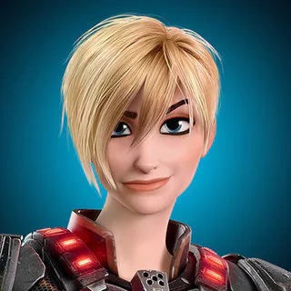
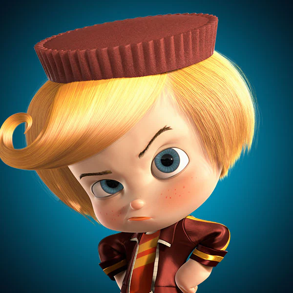
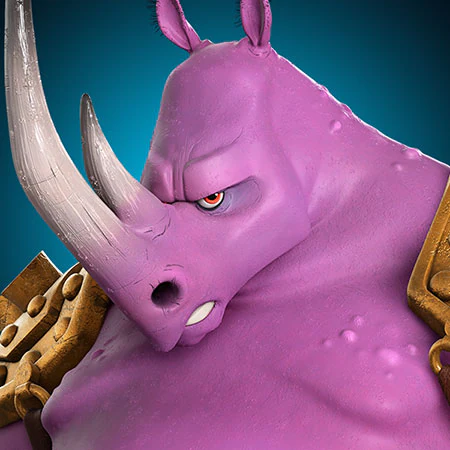
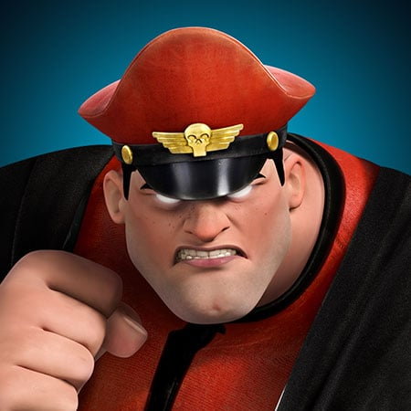
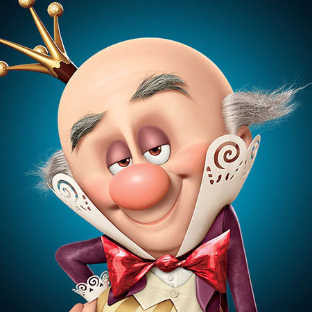
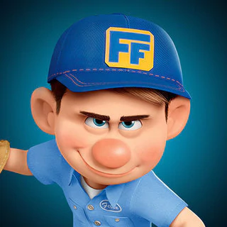
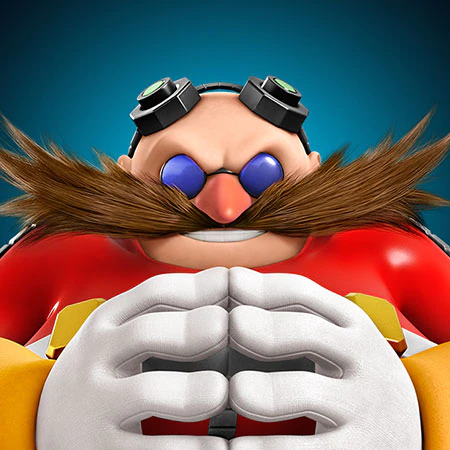
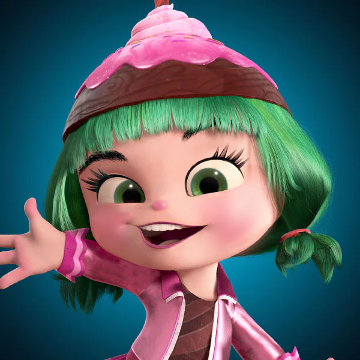
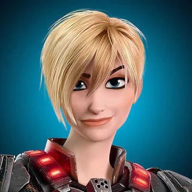
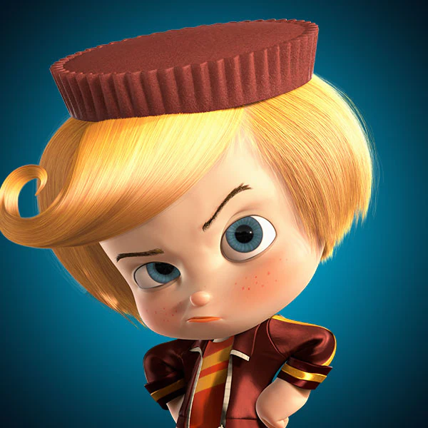
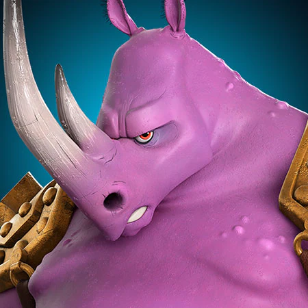
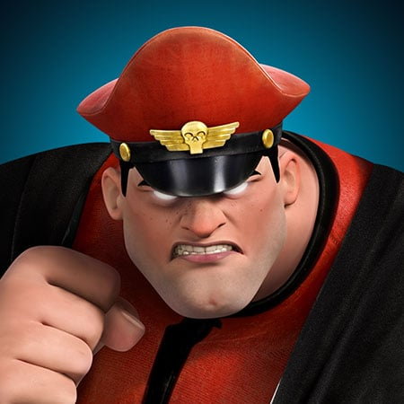
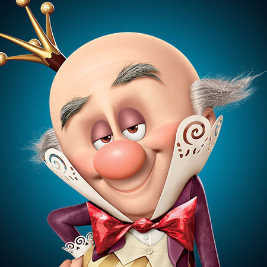
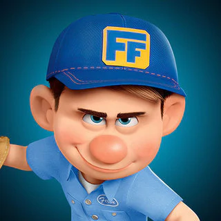
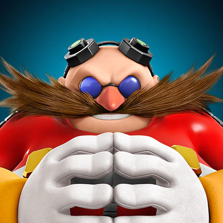
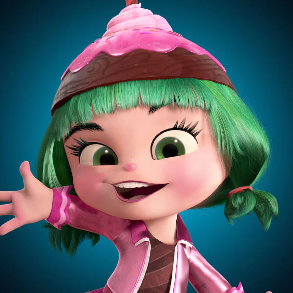
Майк Вазовски
Майк — гордый, целеустремлённый и уверенный монстр. Он является коллегой по работе и лучшим другом Салли, которого он каждое утро тренирует перед походом на работу. В прошлом, Майк сам пытался получить работу страшилы в Корпорации монстров, но из-за не достаточных пугательных характеристик стал работать только помощником страшилы, коим и является Салли. Майк имеет любовные отношения с Селией, также работающей в корпорации.
Майк Вазовски
Майк — гордый, целеустремлённый и уверенный монстр. Он является коллегой по работе и лучшим другом Салли, которого он каждое утро тренирует перед походом на работу. В прошлом, Майк сам пытался получить работу страшилы в Корпорации монстров, но из-за не достаточных пугательных характеристик стал работать только помощником страшилы, коим и является Салли. Майк имеет любовные отношения с Селией, также работающей в корпорации.
Джеймс Пи Салливан
Салли является одним из самых лучших страшил работавших в Корпорации монстров, из-за чего им сильно гордился мистер Водоног — генеральный директор корпорации. Самым лучшим другом Салли является Майк Вазовски, и по совместительству коллегой по работе. Также, были кратко упомянуты его родители: мать миссис Салливан, и отец Билл Салливан, также пользовавшийся известностью в своё время.
Генри Джей Водоног III
Изначально у мистера Водонога был спокойный и отеческий характер, и он всегда был в хороших отношениях с Салли и Майком. У него приветливый и шумный характер, особенно когда он взволнован. Однако он склонен к злодеяниям только из отчаяния, чтобы удержать Корпорацию монстров на плаву в разгар энергетического кризиса (в отличие от Рэндалла, чья ревность к Салли дает ему более злодейскую мотивацию). Мистер Водоног становится все более злодейским, поскольку этот драйв и отчаяние лишают его морали, и он полон решимости не допустить, чтобы что-либо остановило то, что, по его мнению, будет лучшим способом для компании продолжать работу, не принимая во внимание поиск других источников энергоресурсов.
Несмотря на свои действия, у мистера Водонога все еще есть хорошие шансы на искупление, поскольку он просто пытался спасти Монстрополис от энергетического кризиса, а также был миньоном Рэндалла в заговоре.
Селия Мэй
Обычно Селия очень мила, особенно со своим парнем Майком. Хотя у неё может быть вспыльчивый характер, когда она злится, она может успокоиться почти сразу и быстро. Но успокоится она может, если Майк скажет ей правду и подтвердит это.
Мэри Гиббс
Бу - девочка в возрасте трёх лет с карими глазами и тёмными волосами, собранными в два хвостика, которые завязаны розовыми резинками. Она носит розовую ночную рубашку, фиолетовые штанишки и белые носочки.
Роз
Администраторша Корпорации Монстров, очень требовательна к работникам Страшильного Отдела, не любит, когда они не разбирают документы, или путают папки.
Является внедренным агентом Агентства Обнаружения Детей, Номером Первым. Занималась разоблачением преступлений Водонога, но Майк и Салли нарушили ход операции.
Рэндалл Боггс
Он - заклятый враг Джеймса Салливана и Майка Вазовского. Ехидный и мстительный, Рэндалл, как известно, завидует Салливану, своему личному заклятому врагу и самому любимому Страшиле в Монстрополисе. Чтобы оставить свой след в мире, одновременно крадя внимание Салливана, Рэндалл замышляет "революционизировать" индустрию запугивания, используя конспиративные средства, которые включают похищение человеческих детей (и вовлечение Мистера Водонога в качестве своего партнера по преступлению).
Рэндалл Боггс
Он - заклятый враг Джеймса Салливана и Майка Вазовского. Ехидный и мстительный, Рэндалл, как известно, завидует Салливану, своему личному заклятому врагу и самому любимому Страшиле в Монстрополисе. Чтобы оставить свой след в мире, одновременно крадя внимание Салливана, Рэндалл замышляет "революционизировать" индустрию запугивания, используя конспиративные средства, которые включают похищение человеческих детей (и вовлечение Мистера Водонога в качестве своего партнера по преступлению).
Рэндалл Боггс
Он - заклятый враг Джеймса Салливана и Майка Вазовского. Ехидный и мстительный, Рэндалл, как известно, завидует Салливану, своему личному заклятому врагу и самому любимому Страшиле в Монстрополисе. Чтобы оставить свой след в мире, одновременно крадя внимание Салливана, Рэндалл замышляет "революционизировать" индустрию запугивания, используя конспиративные средства, которые включают похищение человеческих детей (и вовлечение Мистера Водонога в качестве своего партнера по преступлению).